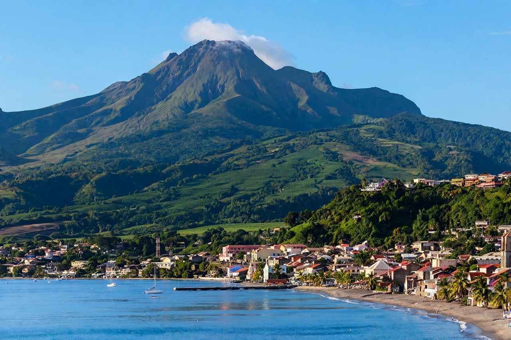

Mount Pelée
From Wikipedia, the free encyclopedia

Mount Pelée is an active stratovolcano at the northern end of Martinique in the Caribbean. Its eruption of 8 May 1902 destroyed the city of Saint-Pierre — then the island's cultural capital, the 'Paris of the Caribbean' — killing some 28,000–30,000 people in minutes with a pyroclastic surge, the deadliest volcanic disaster of the twentieth century. The eruption defined the 'Peléan' type and transformed volcanology; its most famous survivor was the prisoner Ludger Sylbaris, shielded by his cell's thick walls.
The 1902 disaster
After weeks of warnings — ash, sulphur, a crater lake boiling over, animals fleeing — a lateral blast at 7:52 a.m. on Ascension Day sent a glowing cloud (nuée ardente) over Saint-Pierre at hundreds of kilometres per hour. The city burned; ships in the harbour were capsized and set alight; only two or three people within the city survived. A second surge on 20 May completed the ruin. A lava spine then grew from the crater to over 300 metres before crumbling — photographed as the 'Tower of Pelée'.
Legacy
Pelée's horror — civic authorities had discouraged evacuation ahead of an election — spurred the creation of volcano observatories (Frank Perret's work on Martinique; the Hawaiian Volcano Observatory, 1912) and the science of eruption forecasting. The mountain erupted again in 1929–32 without loss of life; Saint-Pierre, rebuilt small on its ruins, is a memorial town beneath the green, watched cone.